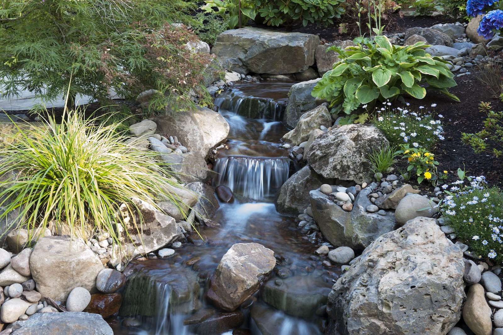
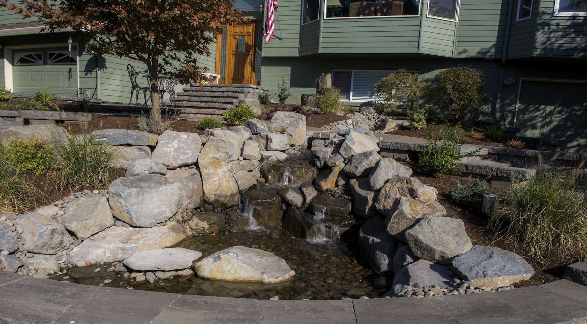
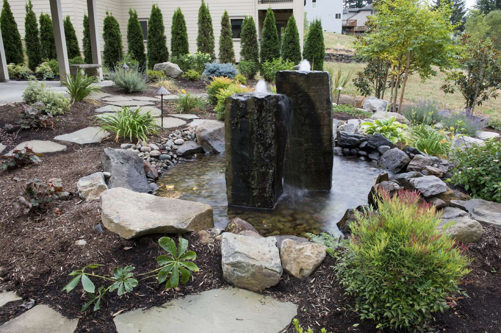

Serene ponds, waterfalls, streams, and fountains — built to make a statement in your landscape.
There is nothing quite like the sound of moving water to bring a landscape to life. Oregon Landscape has been designing and installing custom water features across the Portland metro for over 15 years — from intimate garden fountains to dramatic multi-tier waterfalls.
Every water feature we build is designed specifically for your property — the size, style, sound level, and placement are all chosen to complement your landscape and fit the way you use your outdoor space.
We handle everything from excavation and plumbing to rock placement and plant integration. When we're done, all you have to do is enjoy it.
Get a Free Estimate

Custom-shaped garden ponds with natural rock surrounds, aquatic planting, and optional fish stocking. Designed to look like they've always been there.

Single and multi-tier waterfalls using natural boulders and fieldstone — from gentle trickles to dramatic cascades. Fully recirculating and energy-efficient.

Naturalistic meandering streams that wind through your landscape, connecting an upper pond or waterfall to a lower basin or disappearing bed.

Formal and informal fountain designs — urn fountains, millstone bubblers, spillway bowls, and wall-mounted water walls — for any size garden.
Low-maintenance pondless water features perfect for smaller yards or family spaces — all the sound and beauty of water, with minimal upkeep.
Existing water feature not performing? We diagnose and repair leaks, pump failures, and liner issues — and can upgrade older systems with modern, efficient equipment.


